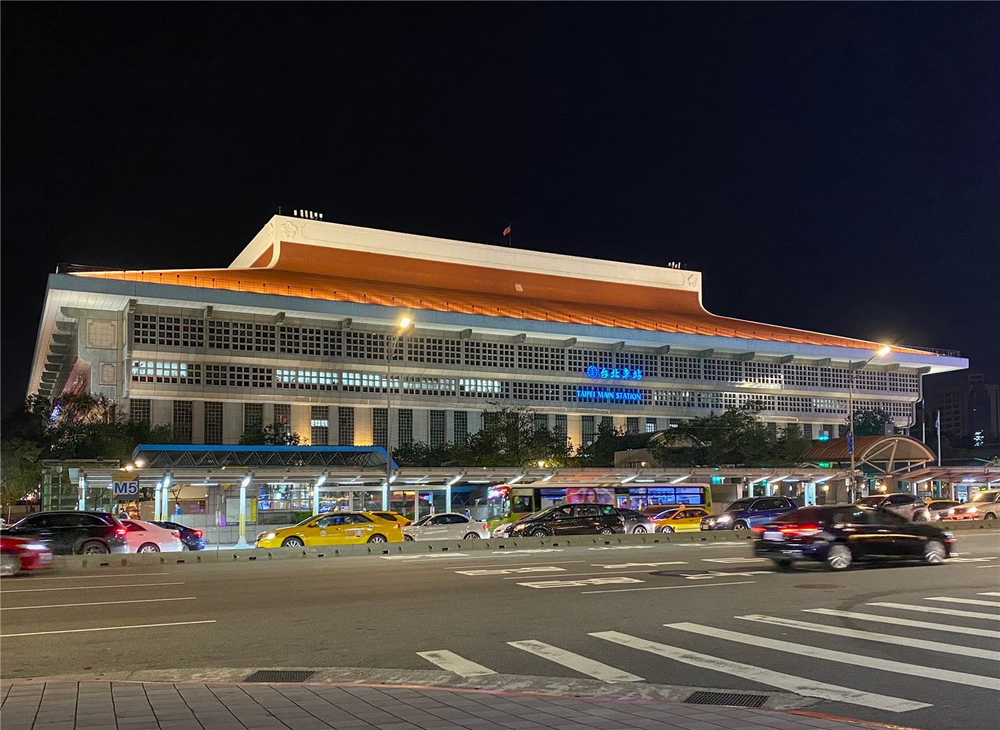

대만고속철 신형 N700ST, 첫 본선 시험운행서 시속 170㎞ 달성…내년 7월 승객 태운다
대만고속철도(台灣高鐵)가 일본에서 도입한 차세대 열차 N700ST가 16일 새벽 처음으로 본선에 올라 시험운행을 했다. 쭤잉~자이 구간에서 시속 170㎞에 도달해 단계 목표를 달성했으며, 첫 3편성은 2027년 7월 영업 운행에 투입될 예정이다.
장입군 기자 · 2026.11.18
橋대만

중앙통신사(中央社)에 따르면 대만고속철은 일본에서 N700ST 12편성을 구매했으며, 첫 편성은 지난 8월 15일 대만에 도착했다. 이후 차량기지에서 조립과 정적 시험, 저속 주행 시험을 마친 뒤 이번에 처음 본선 시험에 나섰다. 회사 측은 이번 시험이 단계 목표를 충족했으며, 앞으로도 일정에 따라 시험을 이어 가겠다고 밝혔다.
광고 문의 · 300×250N700ST는 일본 신칸센 N700S 계열을 바탕으로 한 대만 사양 차량이다. 첫 편성이 영업에 들어가려면 제동, 출입문, 열차 제어, 무선, 공조, 화장실 등 69개 항목의 안전·설비 시험을 모두 통과해야 한다. 자유시보 등 현지 매체도 이번 시험이 시속 170㎞ 목표를 무사히 달성했다고 전했다.
2028년 9월 12편성 모두 투입…피크시간 수송력 25%↑
대만고속철은 안전 절차를 마친 뒤 2027년 7월 1일 첫 3편성을 승객 운송에 투입할 계획이다. 12편성 전체는 2028년 9월까지 차례로 영업에 들어가며, 이렇게 되면 보유 차량은 46편성으로 늘고 출퇴근 등 피크시간 수송력은 약 25% 높아진다.
앞서 중앙통신사는 지난 9월 첫 편성이 차량기지에서 조립을 마치고 정적 시험에 들어갔다고 보도한 바 있다. 당시에도 회사는 2027년 7월 승객 운송을 목표로 내세웠으며, 이번 본선 시험 성공으로 일정 소화에 한 걸음 다가섰다.
대만고속철은 주말과 명절마다 좌석난이 반복돼 왔다는 점에서 신형 열차 도입은 수송력 확충의 핵심 수단으로 꼽힌다. 회사는 고속 주행 단계로 점차 속도를 높이며 성능을 검증할 방침이다.